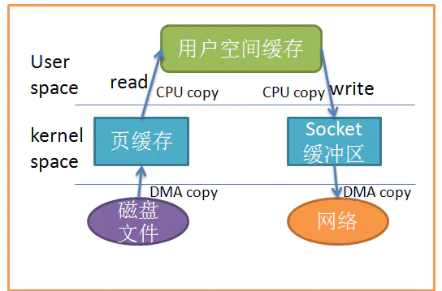
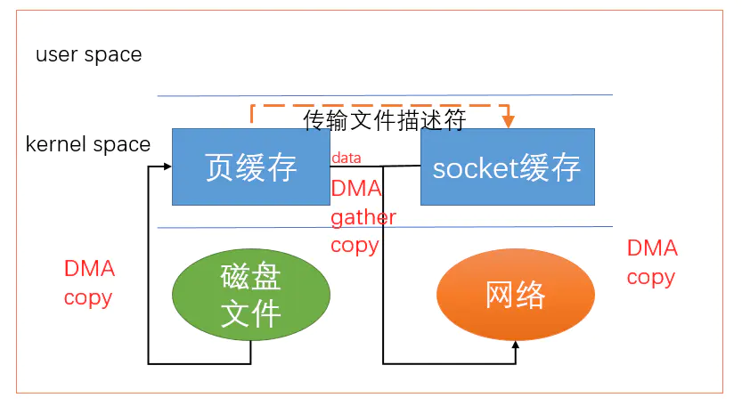
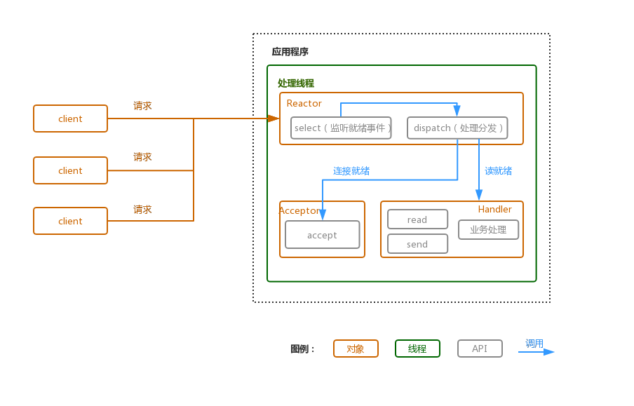
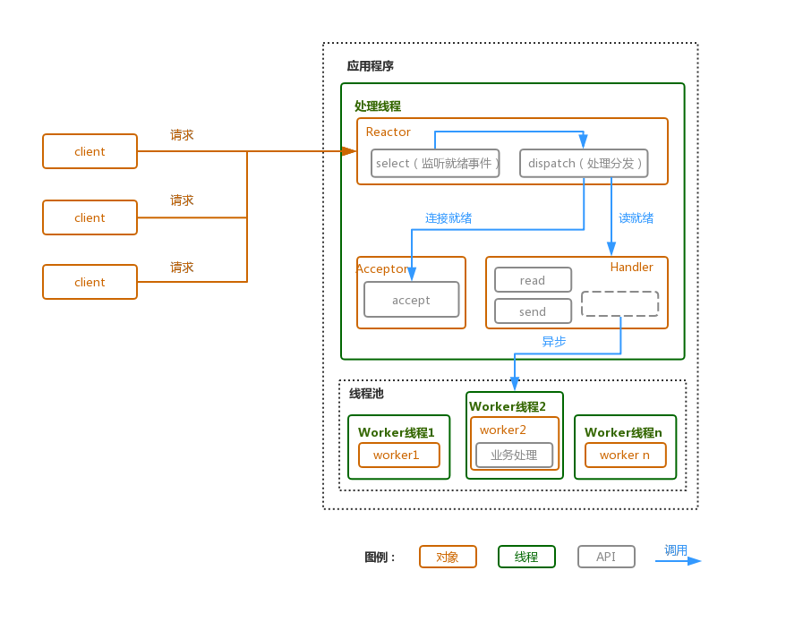
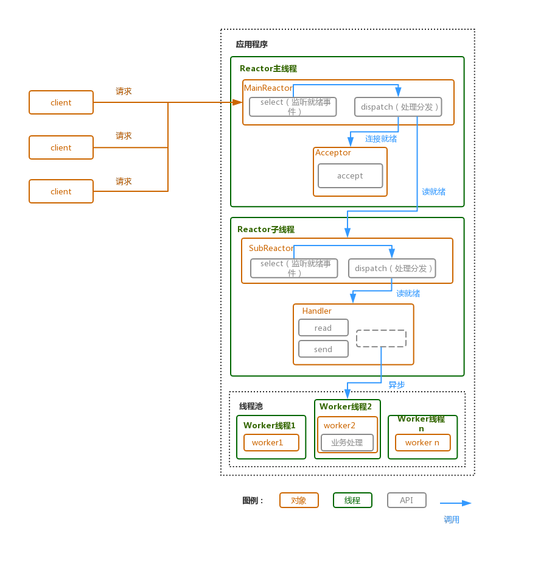

Java NIO模型简析
IO分类
BIO，NIO，AIO等都属于IO模型，都是为了优化系统IO性能而提出。而根据IO的具体内容可以大致分为三类：内存IO；磁盘IO；网络IO。本文主要讨论NIO模型。
IO过程
所有的的系统IO都可以分为两个阶段：等待就绪和数据操作。
- 等待就绪：等待数据就绪，一般是将数据加载到内核缓存区。无论是从磁盘还是网络读取数据，程序能处理的都是进入内核态之后的数据。因此在这个阶段，CPU会阻塞，等待数据进入内核态。
- 数据操作：数据就绪后，一般是将内核缓存中的数据加载到用户缓存区。
等待就绪的阻塞是不使用CPU的，既空等。而真正的读写操作的阻塞是使用CPU的，并且这个过程非常快，属于memory copy，可以理解为基本不耗时。因此可以看出，不使用CPU的等待就绪阶段比实际使用CPU的数据操作阶段，占用CPU的时间更多。
阻塞IO模型（BIO）中，当用户线程发出IO请求后，内核回去查看数据是否准备就绪，如果没有准备就绪就会等待数据继续，而此时用户线程就处于阻塞状态。当数据就绪后，内核会将数据拷贝到用户线程，并返回结果给用户线程，用户线程才会解除阻塞状态。
可以看出等待就绪是很浪费线程资源的，内存IO，磁盘IO和网络IO都有一些优化方案：
内存IO：内存部分没有涉及到太多阻塞，优化点在于减少用户态和内核态之间的数据拷贝。例如零拷贝（mmap，sendfile）。
磁盘IO：引入DMA，可以将IO数据直接传送到主存储器中并且不需要CPU的参与，从而解放CPU去完成其他的事情。
网路IO：NIO，AIO等IO模型。在每个socket被创建后都会分配两个缓冲区：输入/输出缓冲区。
- 输入缓冲区：当使用
read()/recv()读取数据时，（1）首先会检查缓冲区，如果缓冲区中有数据，那么就读取，否则函数会被阻塞，直到网络上有数据到来。（2）如果要读取的数据长度小于缓冲区中的数据长度，那么就不能一次性将缓冲区中的所有数据读出，剩余数据将不断积压，直到有 read()/recv() 函数再次读取。（3）直到读取到数据后 read()/recv() 函数才会返回，否则就一直被阻塞。 - 输出缓冲区：当使用
write()/send()发送数据时，（1）首先会检查缓冲区，如果缓冲区的可用空间长度小于要发送的数据，那么 write()/send() 会被阻塞，直到缓冲区中的数据被发送到目标机器，腾出足够的空间，才唤醒 write()/send() 函数继续写入数据。（2） 如果TCP协议正在向网络发送数据，那么输出缓冲区会被锁定，不允许写入，write()/send() 也会被阻塞，直到数据发送完毕缓冲区解锁，write()/send() 才会被唤醒。（3）如果要写入的数据大于缓冲区的最大长度，那么将分批写入。（4）直到所有数据被写入缓冲区 write()/send() 才能返回。
- 输入缓冲区：当使用
内存IO优化
为什么引入零拷贝
以网络IO为例，服务端提供文件下载功能，这时服务端的任务是：将服务端主机磁盘中的文件不做修改地从已连接的socket发出去。基本操作如下图所示，共产生四次数据拷贝。

零拷贝思路：让数据传输不需要经过用户空间。
mmap()
应用程序调用mmap()，磁盘上的数据会通过DMA被拷贝至内核缓冲区。接着操作系统会把这段内核缓冲区与应用程序共享，从而免去将内核缓冲区的内容往用户空间拷贝这一步。此时应用程序调用write()，操作系统直接将内核缓冲区的内容拷贝到socket缓冲区。这一切都发生在内核态中，最后socket缓冲区再把数据发到网卡。使用mmap()替代read()减少了一次拷贝，减少了内核空间和用户空间之间的拷贝次数，因此提升了效率。但是使用时也有一些陷阱，此处不展开。

sendfile()。
系统调用sendfile()在代表输入文件的描述符in_fd和代表输出文件的描述符out_fd之间传送文件内容（字节）。描述符out_fd必须指向一个套接字，而in_fd指向的文件必须是可以mmap的。这些局限限制了sendfile的使用，使sendfile只能将数据从文件传递到套接字上，反之则不行。数据根本不经过用户态，减少了上下文切换。

带有DMA收集拷贝的sendfile()。
将文件内容拷贝到内核缓冲区后，将带有文件位置和长度信息的缓冲区描述符添加到socket缓冲区，而不是将数据拷贝到socket缓冲区，最后DMA引擎会将内核缓冲区的数据拷贝到协议引擎中。可以看出此时数据只经历了两次拷贝。

网络IO优化
BIO，NIO，AIO
以socket.read()为例
- 传统的BIO里，如果TCP RecvBuffer中没有数据，函数会一直阻塞，直到收到数据，返回读到的数据。
- 对于NIO，如果TCP RecvBuffer没有数据，直接返回0，不会阻塞。
- AIO中，等待就绪阶段是非阻塞的，数据从网卡到内存的过程异步的。
通俗而言，BIO中用户最关心“我要读”，NIO中用户最关心“我可以读”，AIO中用户关心”已经读完了“。
NIO的优化
NIO的优化体现在两个方面：
- IO模型的优化，同步非阻塞的模式。
- 内存IO的优化，利用零拷贝等方式，降低数据拷贝次数和上下文切换次数。
NIO的重要特点：socket主要的读，写，注册和接收函数，在等待就绪阶段都是非阻塞的，真正的数据操作阶段则是同步阻塞的。
NIO关注的事件：读就绪，写就绪，有新的连接到来。
首先需要注册当这几个事件到来的时候所对应的处理器。然后在合适的时机告诉事件选择器：我对这个事件感兴趣。对于写操作，就是写不出去的时候对写事件感兴趣；对于读操作，就是完成连接和系统没有办法承载新读入的数据的时；对于accept，一般是服务器刚启动的时候；而对于connect，一般是connect失败需要重连或者直接异步调用connect的时候。
其次，用一个死循环选择就绪的事件，会执行系统调用（Linux 2.6之前是select、poll，2.6之后是epoll，Windows是IOCP），还会阻塞的等待新事件的到来。新事件到来的时候，会在selector上注册标记位，标示可读、可写或者有连接到来。
注意，selector是阻塞的，无论是通过操作系统的通知（epoll）还是不停的轮询(select，poll)，这个函数是阻塞的。所以可以放心大胆地在一个while(true)里面调用这个函数而不用担心CPU空转。
Reactor模型
Reactor是一种事件驱动机制，是处理并发IO常见的一种模式。其中心思想是将所有要处理的IO事件注册到一个中心IO多路复用器上（IO多路复用），同时主线程阻塞在多路复用器上。一旦有IO事件到来或是准备就绪，多路复用器将返回并将IO事件分发到对应的处理器中。
Reactor模式主要分为下面三个部分：
- 事件接收器Acceptor：主要负责接收请求连接，接收请求后，会将建立的连接注册到分发器中。
- 事件分发器Reactor：依赖于循环监听多路复用器Selector，是阻塞的，一旦监听到事件，就会将事件分发到事件处理器。（例如：监听读事件，等到内核态数据就绪后，将事件分发到Handler，Handler将数据读到用户态再做处理）
- 事件处理器Handler：事件处理器主要完成相关的事件处理，比如读写I/O操作。
Reactor的三种模式
单线程Reactor模式
一个线程：
- 单线程：建立连接（Acceptor）、监听accept、read、write事件（Reactor）、处理事件（Handler）都只用一个单线程。

流程如下（以read为例）：
- Reactor对象通过select监听客户端的请求事件，收到事件消息后通过dispatch进行任务分发；
- 如果是建连请求，则交由Acceptor对象处理连接请求，然后创建一个Handler对象继续完成后续处理；
- 若不是建连请求，则dispatch会调用对应连接的Handler进行处理，Handle负责完成连接成功后的后续处理（读操作、写操作、业务处理等）。Handler业务处理部分没有异步。
优点：模型简单，没有多线程、进程通信、竞争的问题，全部都在一个线程中完成。
缺点：性能问题，只有一个线程，无法完全发挥多核 CPU 的性能。Handler 在处理某个连接上的业务时，整个进程无法处理其他连接事件，很容易导致性能瓶颈。可靠性问题，线程意外跑飞，或者进入死循环，会导致整个系统通信模块不可用，不能接收和处理外部消息，造成节点故障。
多线程Reactor模式
一个线程 + 一个线程池：
- 单线程：建立连接（Acceptor）和 监听accept、read、write事件（Reactor），复用一个线程。
- 工作线程池：处理事件（Handler），由一个工作线程池来执行业务逻辑，包括数据就绪后，用户态的数据读写。

流程如下：
- Reactor对象通过select监听客户端的请求事件，收到事件消息后通过dispatch进行任务分发；
- 如果是建连请求，则交由Acceptor对象处理连接请求，然后创建一个Handler对象继续完成后续处理；
- 若不是建连请求，则dispatch会调用对应连接的Handler进行处理。Handler负责完成连接成功后的读操作，读出来数据后的业务处理部分交由线程池异步处理。业务处理完成后发送给Handler处理完成的消息，然后再由Handler发送处理响应信息给对应的Client。
优点：充分利用多核CPU的处理能力。
缺点：多线程数据共享和访问比较复杂；Reactor 承担所有事件的监听和响应，在单线程中运行，高并发场景下容易成为性能瓶颈。
主从Reactor模式
三个线程池：
- 主线程池：建立连接（Acceptor），并且将accept事件注册到从线程池。
- 从线程池：监听accept、read、write事件（Reactor），包括等待数据就绪时，内核态的数据读写。
- 工作线程池：处理事件（Handler），由一个工作线程池来执行业务逻辑，包括数据就绪后，用户态的数据读写。

流程如下：
- MainReactor对象通过select监听客户端的连接事件，收到连接事件后交由Acceptor处理。
- Acceptor处理完成后，MainReactor将此连接分配给SubReactor处理，SubReactor将此连接加入连接队列进行事件监听，并且建立Handler进行后续的各种操作。同上面的模型一致，SubReactor会监听新的事件，如果有新的事件发生，则调用Handler进行相应的处理。
- Handler读出来数据后的业务处理部分交由线程池异步处理，业务处理完成后发送给Handler处理完成的消息，然后再由Handler发送处理响应信息给对应的Client。
该模型存在两个线程分别处理Reactor事件，主线程只负责处理连接事件，子线程只负责处理读写事件。这样主线程可以处理更多的连接，而不用关心子线程里的读写处理是否会影响到自己。
优点：父线程与子线程的数据交互简单职责明确，父线程只需要接收新连接，子线程完成后续的业务处理。父线程与子线程的数据交互简单，Reactor 主线程只需要把新连接传给子线程，子线程无需返回数据。这种模型在许多项目中广泛使用，包括 Nginx 主从 Reactor 多进程模型，Memcached 主从多线程，Netty 主从多线程模型的支持。
缺点：编程复杂度较高
select, poll, epoll简析
TODO